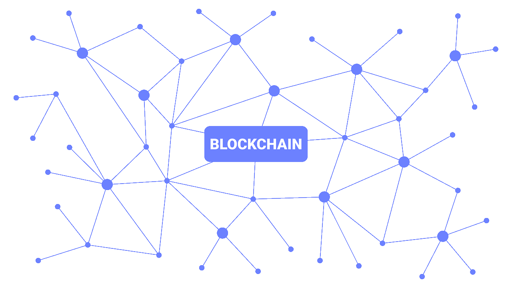

Что такое блокчейн?

Блокчейн — это реестр децентрализованных данных, которыми можно безопасно обмениваться. Технология блокчейн позволяет коллективной группе избранных участников обмениваться данными. С помощью облачного сервиса блокчейна можно легко собирать и передавать данные транзакций из нескольких источников. Данные разбиваются на общие блоки, которые связаны друг с другом с помощью уникальных идентификаторов в форме криптографических хэшей.
Блокчейн обеспечивает целостность данных с помощью единого источника достоверной информации, устраняя дублирование данных и повышая безопасность.
В системе блокчейна мошенничество и взлом данных предотвращаются за счет того, что данные нельзя изменить без разрешения всех сторон. Реестр блокчейна может использоваться совместно, но не может быть изменен. Если кто-то попытается изменить данные, все участники будут предупреждены и будут знать, кто предпринимает эту попытку.
Как работает технология блокчейн?

Подумайте о блокчейне как о записи транзакций за предыдущие периоды. Каждый блок «связан» с предыдущим блоком в последовательности и записывается в неизмененном виде во всей одноранговой сети. Технология криптографического доверия и гарантий применяет уникальный идентификатор — или цифровой отпечаток пальца — к каждой транзакции.
Доверие, подотчетность, прозрачность и безопасность встроены в цепочку. Таким образом разные типы компаний и торговых партнеров могут получать доступ к данным и обмениваться ими. Это феномен, известный как доверие третьих сторон на основе консенсуса. Все участники ведут зашифрованную запись каждой транзакции в рамках децентрализованного, хорошо масштабируемого и надежного механизма записи, который нельзя сфальсифицировать. Блокчейн не требует никаких дополнительных накладных расходов или посредников. За счет децентрализованного единого достоверного источника снижаются затраты на надежные бизнес-операции между сторонами, которые могут не совсем доверять друг другу. В эксклюзивном блокчейне, используемом большинством предприятий, участники имеют право участвовать в сети, и каждый участник ведет зашифрованную запись каждой транзакции.
Эта уникальная технология дает преимущества любой компании или группе компаний, которым требуется безопасный общий доступ к транзакциям в режиме реального времени. Здесь нет единого места, где хранится все, т. е. нет центральной точки уязвимости, что позволяет повысить безопасность и доступность.
Формы криптовалюты
Цифровую валюту делят на коины и токены.
Коин. Это денежная единица криптовалюты, которая работает в собственном блокчейне. Ее можно добыть с помощью майнинга — предоставления системе вычислительных мощностей своего компьютера. Коины можно переводить другим пользователям системы блокчейн и продавать за обычную валюту. Некоторые компании принимают их в качестве оплаты товаров и услуг. Например, Microsoft продает за биткоины операционную систему Windows и игровую приставку Xbox.
Есть коины, которые работают на переписанном блокчейне биткоина. Их называют альткоинами — альтернативными версиями биткоина.
Токен. Эта денежная единица криптовалюты создается на основе уже существующего блокчейна. Их нельзя добыть, но можно купить или получить за активность. Токенами даже в теории нельзя расплачиваться, их используют, чтобы дать пользователю доступ к функциям платформы. Если коин — это купюра, то токен — билет. Но если вывести токен на биржу, его можно обменять на обычные деньги по текущему курсу.
Токены можно использовать как инструмент для инвестиций и свидетельство права на бизнес, с их помощью можно участвовать в голосованиях или опросах.
У токенов больше возможностей, но среди инвесторов больше ценятся коины: их труднее создать.
Виды криптовалют
Децентрализованные. Это криптовалюты, которые добываются майнингом. Например, Bitcoin, Ethereum, Zilliqa, Elastos, IOTA.
Псевдодецентрализованные. Выпуск и оборот таких валют контролирует закрытая группа людей, она же может принимать решения о блокировке счетов владельцев. При этом добыть электронные деньги с помощью майнинга нельзя — псевдодецентрализованную валюту покупают. К таким криптовалютам относятся Bitcoin Cash, Ripple, TRON, EOS.
Стейблкоины. Стоимость такой валюты привязана к какой-либо ценности, реже — к другой криптовалюте, поэтому ее цена меняется чаще, чем у других валют. Например, Gemini Dollar равен доллару США, а DigixDAO — грамму золота.
Стейблкоины, выпуск которых обеспечивается национальными деньгами, полностью централизованы. Например, компания Tether Limited выпустила криптовалюту Tether, которая на 20% обеспечивается запасами долларов США со счетов организации. А Gemini Dollar обеспечен полностью. Его контролирует Департамент финансовых услуг штата Нью-Йорк